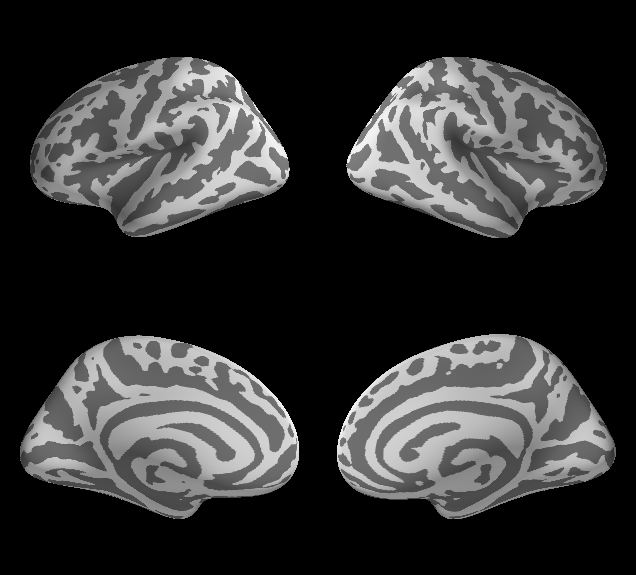

Working with a split-screen brain¶
The split-screen view can be activated by using the argument hemi='split'.
Using this option will put views of the left hemisphere in consecutive
vertical frames on the left, and views of the right hemisphere in
consecutive vertical frames on the right. For example, running the following:
brain = Brain('fsaverage', 'split', 'inflated', views=['lat', 'med'])
Will produce a window with two columns (hemispheres) and two rows (the lateral and medial views, respectively), shown below.
Adding and displaying data¶
Data can be added to either hemisphere using the same functions that are
normally used, e.g. add_data, add_overlay, add_morphometry.
The objects are automatically shown on all views of the brain. When
calling these functions, the hemi keyword argument can be set to
hemi='lh' or hemi='rh' to specify the hemisphere to plot to.
In some instances (e.g., add_morphometry), if no keyword argument
is provided, PySurfer will attempt to load data or both hemispheres
automtically.
Note that the show_view method accepts arguments for the row and
col values, which allow the user to control which Brain panel
gets the updated view.
Caveats¶
The multi-view support is available thanks to the capabilities of the
TraitsUI framework. However, due to some limitations in the implementation
of TraitsUI, there is no guarantee that a set of scripted commands will
result in a painted window when the user may think it will. For
example, making a series of calls to brain.add_label() followed by
brain.save_image('out.png') may result in some or all of the labels
being absent from the saved out.png. While we have implemented some
workarounds to help prevent this occurrance, we cannot guarantee it will
work. Thus we recommend that for critical non-interactive plotting (e.g.,
if scripting figure generation for a paper) only a single view is used
with hemi set to 'lh', 'rh', or 'both'. This will use a single,
pure Mayavi window, thereby bypassing TraisUI entirely – this helps
guarantee that drawing commands result in updated visual display.